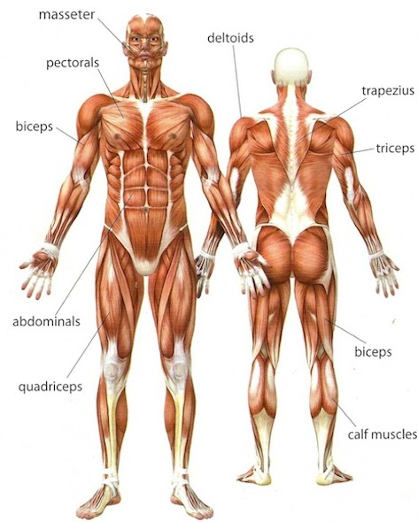

לקבלת מידע נוסף לחץ על שם השריר
שריר הטרפז:
שריר הטרפז כולו מבצע קירוב שכמות. חלקו העליון מבצע הרמת שכמות בלבד, חלקו התחתון מבצע הורדת שכמות בלבד
וחלקו האמצעי תורם לקרוב השכמות בלבד
דוגמאות לתרגילי טרפז אופציונאלים:
הרמת שכמות עם משקולות ידקירוב שכמות במכונת החתירה
הרמת שכמות כנגד מוט חופשי
*ניתן להפעיל את הטרפז גם בצורה לא ייעודית על ידי תרגילים מורכבים כגון מתח ושאר תרגילי הגב כמו חתירות
שריר הכתף:
השריר כולו מחזיק את הכתף.
הכתף הקדמית מבצעת כפיפה, רוטציה מדיאלית של הכתף, וקרוב אופקי. הכתף האחורית מבצעת פשיטה, רוטציה לטרלית של הכתף והרחקת אופקית.
הכתף האמצעית תורמת להרחקה בלבד.
דוגמאות לתרגילי כתף אופציונאלים:
לחיצת כתפיים כנגד מוט אולימפיהרחקת כתפיים כנגד משקולות יד
כפיפת כתף כנגד משקולות יד
שריר החזה:
השריר מחולק לשלושה חלקים: חזה עליון, חזה אמצעי, וחזה תחתון
השריר כולו מבצע קירוב אופקי, ורוטציה מדיאלית של הכתף
חלקו העליון של שריר החזה מבצע כפיפה, ואילו חלקו התחתון של החזה מבצע את תנועות הפשיטה והקירוב
דוגמאות לתרגילי חזה אופציונאלים:
לחיצת חזה כנגד מוט חופשיפרפר במכונה ייעודית
פול-אובר באחיזה צרה כנגד משקולת יד
יד קדמית:
השריר מתחלק ל2 ראשים: הראש הקצר והראש הארוך ועל כן שמו כן הוא
שריר היד קדמית אחראי על כפיפה וסופינציה של המפרק, וכן על ייצוב הכתף
דוגמאות לתרגילים ליד קדמית:
כפיפת מרפק כנגד כבל תחתוןכפיפת מרפק אחיזת ״פטישים״
כפיפת מרפק כנגד מוט w
יד אחורית:
השריר מתחלק ל-3 ראשים: הראש החיצוני, הראש האמצעי והראש הארוך
אחריות השריר היא לבצע פשיטת מרפק כאשר הראש הארוך עצמו מסייע גם בפשיטת כתף
דוגמאות לתרגילי יד אחורית:
לחיצה צרפתיתלחיצת חזה אחיזה צרה
פשיטת מרפק כנגד פולי עליון באמצעות חבל
שרירי הבטן
קבוצת שרירי הבטן מתחלקת ל-4 שרירים: האלכסונים-הפנימיים והחיצונים, הרחב בטני, ושריר הקוביות
שרירי האלכסונים אחראים על רוטציה של הגו לאותו כיוון ובנוסף לכפיפה של הגו וסיבוב האגן לאחור.
שריר הרחב בטני אחראי על יצירת לחץ תוך בטני שפועל להשטחת הבטן ויצירת איזון בגוף.
ואילו שריר הקוביות אחראי בעיקר על כפיפת הגו וסיבוב האגן לאחור.
תרגיל בטן אפשריים:
כפיפות בטן בתוספת משקלקימה משכיבה לישיבה.
עמידת ״נר״
שריר הארבע ראשי:
השריר כולו מבצע פשיטת ברך
חלקו הגדול מסייע גם בכפיפת הירך ולכן מורגש לפעמים בתרגילי הבטן.
דוגמאות לתרגילים לארבע ראשי:
לחיצת רגליים כנגד מכונה ייעודיתסקוואט
מכרעים
קבוצת שרירי החבליים:
בקבוצה זו שלושה שרירים: biceps femoris, semimembranosus, semitendinosus
שרירים אלו אחראים בעיקר על כפיפת הברך אך גם מסייעים בפשיטת הירך
תרגילים לשרירי הירך האחורית:
stiff-leg deadliftכפיפת ברך כנגד מכונה ייעודית
romanian deadlift
שריר התאומים:
שריר התאומים אחראי בעיקר על הרמת העקבים, מסייע גם בכפיפת הברך.